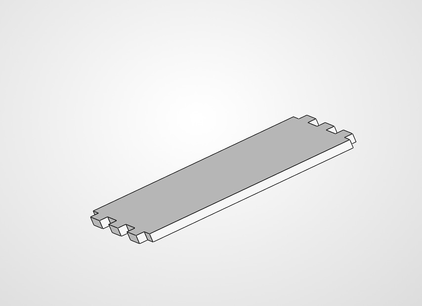
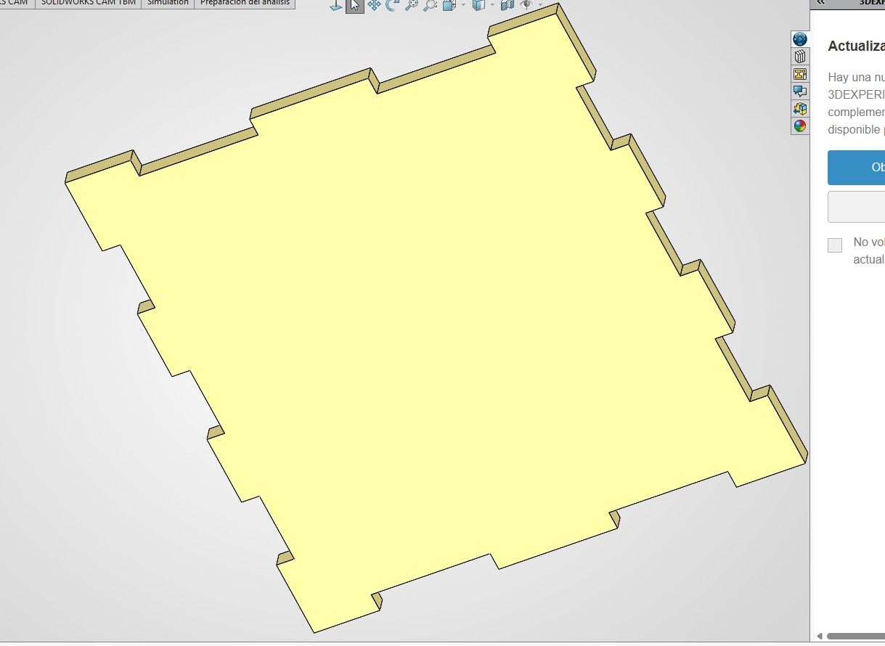
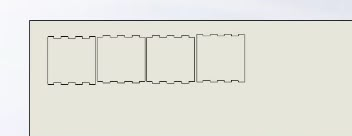

Reporte de Práctica: Diseños en SolidWorks, Uniones Mecánicas y Bisagras Vivas
Institución: Universidad Iberoamericana Puebla
Departamento: Ingenierías / Mecatrónica
Asignatura: Proyectos de Ingeniería
Ubicación: Instituto de Diseño e Innovación Tecnológica (IDIT)
Supervisión Académica: Mtro. Oliver Ochoa (Coordinador de Carrera)
1. Objetivos
- General: Desarrollar habilidades de diseño CAD en SolidWorks orientadas a manufactura por corte láser, aplicando conceptos de ensamble mecánico macho-hembra, compensación de Kerf y flexibilidad mediante patrones de bisagras vivas.
- Específicos:
- Diseñar piezas cuadradas paramétricas con almenas y pestañas de ensamble a presión (press-fit).
- Analizar los diferentes tipos de uniones mecánicas (ensambles a tope, a media madera, por almenas/dientes y uniones tipo chaveta).
- Comprender el concepto de Kerf y calcular el offset dimensional requerido para garantizar el ajuste exacto de las piezas.
- Explorar los diversos patrones de bisagras vivas (lattice hinges) para otorgar flexibilidad a materiales rígidos (MDF/acrílico) según su geometría.
2. Marco Teórico y Conceptos Clave
A. Tipos de Uniones Mecánicas para Corte Láser
- Uniones Dentadas (Almenas / Pestañas): Acoplamientos macho-hembra en los bordes de los perfiles que distribuyen los esfuerzos de corte a lo largo del ensamble.
- Uniones T-Slot (Con Perno o Cuña): Aseguran las caras tridimensionales utilizando un sujetador mecánico o cuña de presión.
- Compensación de Kerf: El haz láser sublima un ancho de material (típicamente entre \(0.10\text{ mm}\) y \(0.20\text{ mm}\)). En SolidWorks se aplica un offset hacia el exterior en los contornos macho para que el ensamble no quede holgado.
B. Patrones de Bisagras Vivas (Living Hinges)
Las bisagras vivas consisten en cortar patrones de celosía intercalados en una lámina rígida. La flexibilidad, el ángulo de doblado y la resistencia estructural cambian según el patrón seleccionado: * Líneas Paralelas Intercaladas (Estándar): Otorga un radio de curvatura amplio y flexión uniforme. * Patrón Ondulado / Diamante: Distribuye la tensión en múltiples direcciones, ideal para curvaturas complejas u orgánicas (como la estructura de una ballena articulada). * Patrón de Panal (Hexagonal): Brinda mayor rigidez torsional manteniendo cierta capacidad de flexión.
3. Desarrollo Experimental y Análisis de Evidencias CAD
Bajo la supervisión del Mtro. Oliver Ochoa, se desarrollaron los modelos paramétricos en SolidWorks analizando las cotas y la tolerancia de encaje.
Figura 1: Croquizado
Se trazó un cuadrado, incorporando y pestañas en los bordes para posteriormente extruirlo y hacer su pieza con las pestanas contruentes

Figura 1: Primera pieza.Figura 2: Parametros de la pieza
Se definieron las variables geométricas del croquis: base cuadrada de \(50.00\text{ mm}\), profundidad de pestaña de \(3.00\text{ mm}\) (igual al espesor del material) y ancho de almena de \(6.00\text{ mm}\). Se realizó la operación de extrusión considerando el espesor nominal de la lámina de trabajo (\(3.00\text{ mm}\)), permitiendo validar el volumen tridimensional de la pieza individual.

Figura 2: Pieza extruida tridimensionalmente en SolidWorks lista para pruebas de ensamble.Figura 3: Plano en solid
Se trazó la plantilla de placas cuadradas alineadas, incorporando almenas y pestañas en los bordes para optimizar el espacio de corte y preparar la fabricación en lote.

Figura 3: Plano de las piezas acomodadas para dxf.4. Resumen de Parámetros y Resultados
| Etapa de Diseño | Operación en SolidWorks | Propósito Técnico |
|---|---|---|
| Geometry Base | Croquis de \(50.00 \times 50.00\text{ mm}\) | Establecer la dimensión estructural de la cara plana |
| Pestañas / Almenas | Cortes/Extrusiones de \(6.00\text{ mm}\) | Generar la unión mecánica macho-hembra |
| Living Hinges | Patrón de cortes intercalados | Permitir la curvatura de piezas rígidas para formas complejas |
5. Conclusiones
- Se aprendió a modelar geométricamente componentes en SolidWorks considerando de origen las limitaciones y tolerancias del proceso de manufactura sustractiva por láser.
- La adecuada selección del patrón de bisagra viva permite transformar láminas rígidas planas en volúmenes tridimensionales flexibles y orgánicos.
-
Las sesiones supervisadas por el Mtro. Oliver Ochoa permitieron comprender la relación fundamental entre la teoría del modelado CAD, las tolerancias físicas (Kerf) y el ensamblaje mecánico real.)";
reporte.close();
std::cout << "============================================================" << std::endl; std::cout << " ¡EXITO! Reporte generado como 'Reporte_SolidWorks_Uniones_Bisagras_IDIT.md'" << std::endl; std::cout << " Puedes abrirlo y previsualizarlo directamente en VS Code." << std::endl; std::cout << "============================================================" << std::endl;